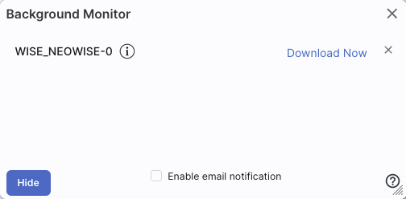
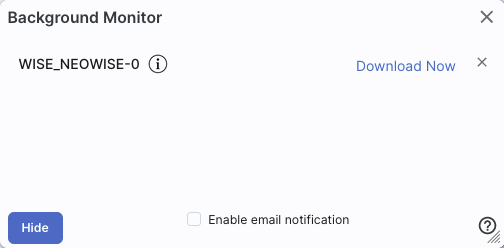
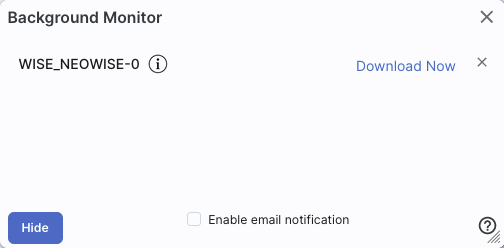

The Catalogs section has much more information about interacting specifically with catalogs, including searhing for them.
You can choose from any of a wide variety of catalogs (from IRSA, your own disk, the VO, or NED) to load and overlay on your visualized data.
Pinning is covered separately in several sections: the Catalog searching via VO TAP ObsCore search, the visualization extraction tools, and the plots pinning section.
 ) Larger
catalog requests can be sent to the Background Monitor.
) Larger
catalog requests can be sent to the Background Monitor.
A pop-up window can be called up at any time by clicking the
"Background Monitor" tab. You can watch your data being retrieved.
It will update that window when the data are available for download
and/or overlay on your image, providing a link (or links) for obtaining
the data. It also keeps track of the downloads you have requested
during the same session, and indicates with a checkmark those that you
have already loaded. Remove them from the list by clicking on the blue
'x'.

If you have made, say, a large catalog request and don't want the
pending catalog request to occupy screen space while it loads, you can
click on the button marked "send to background" to reclaim your screen
space, seen here:

When the background monitor finishes, however, you will have to
actively tell it to display results;it doesn't do it automatically if
you have sent it to the background.
You can ask it to send you email when it is ready by clicking on the
"enable email notification" and giving it an email address.
To stop any query mid-way through, click on the little red octagon ("stop sign") that appears next to the query in the Background Monitor pop-up.
If you forgot to put in your email at the beginning, or if the packaging is taking longer than you expected, you can click on "Enable email notification" from the bottom of the Background Monitor popup and add your email during the packaging process.
If you forgot to put in your email at the beginning, or if the packaging is taking longer than you expected, you can click on "Enable email notification" from the bottom of the Background Monitor popup and add your email during the packaging process.
If you are having technical difficulties, click on the circle with an
"i" in it to get additional information, like this:

In this case, the job is executing, at the time as given, the link is
given there (and can be copied by clicking on the clipboard, ready to
be pasted into a helpdesk query), with a job id as shown.